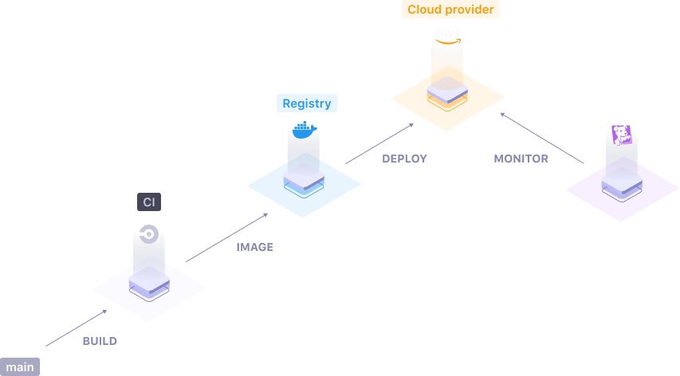
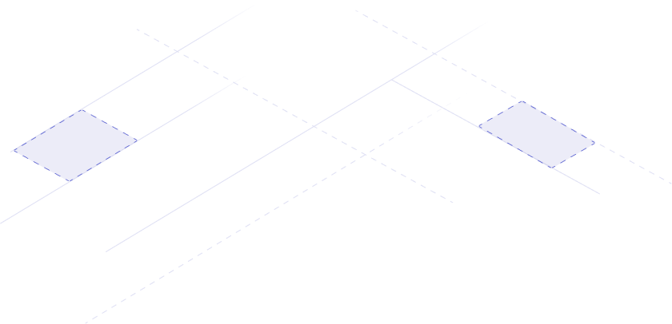

How does it work?
Qovery Engine is an open-source abstraction layer product that turns easy apps deployment on AWS, GCP, Azure and others Cloud providers. The Qovery Engine is coded in Rust and takes advantage of Terraform, Helm, Kubectl, Docker to manage resources.
Usage
Initialize EKS (AWS Kubernetes) and ECR (AWS container registry) on AWS

let engine = Engine::new(
context, // parameters
local_docker, // initialize Docker as a Build Platform
ecr, // initialize Elastic Container Registry
aws, // initialize AWS account
cloudflare, // initialize Cloudflare as DNS Nameservers
);
let session = match engine.session() {
Ok(session) => session, // get the session
Err(config_error) => panic!("configuration error {:?}", config_error),
};
let mut tx = session.transaction();
// create EKS (AWS managed Kubernetes cluster)
tx.create_kubernetes(&eks);
// create the infrastructure and wait for the result
match tx.commit() {
TransactionResult::Ok => println!("OK"),
TransactionResult::Rollback(commit_err) => println!("ERROR but rollback OK"),
TransactionResult::UnrecoverableError(commit_err, rollback_err) => println!("FATAL ERROR")
};
Deploy real world applications
Qovery Engine empowers you to deploy complex applications, such as a backend, a frontend, and a database in a very simple way.
Servers, networking, security, all is done by the Engine for you.
See moreResiliency is key
Qovery Engine knows when something goes wrong on the deployment of your applications. Qovery Engine is built with resiliency in mind.
A transactional engine inspired by what is provided into ACID databases has been developed at the heart of the product to rollback on a consistent and working application version when something goes wrong.

On top of the best tools
Qovery Engine does not reinvent the wheel. It takes advantage of the best tools in the Cloud industry, such as Kubernetes, Terraform, and Helm to manage the deployment of the infrastructure and your applications.
Servers, networking, security, all is done by the Engine for you.
See moreExtensible
Qovery Engine is built to be highly extensible. Adding the support of a Cloud provider or a Continuous Integration platform is as simple as implementing a simple programmatic interface.
See more